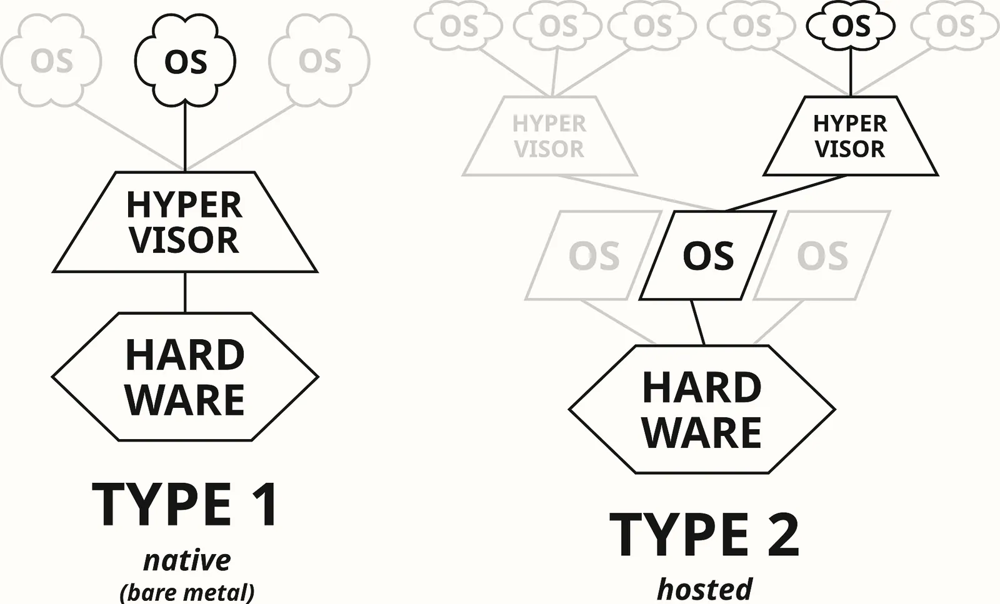
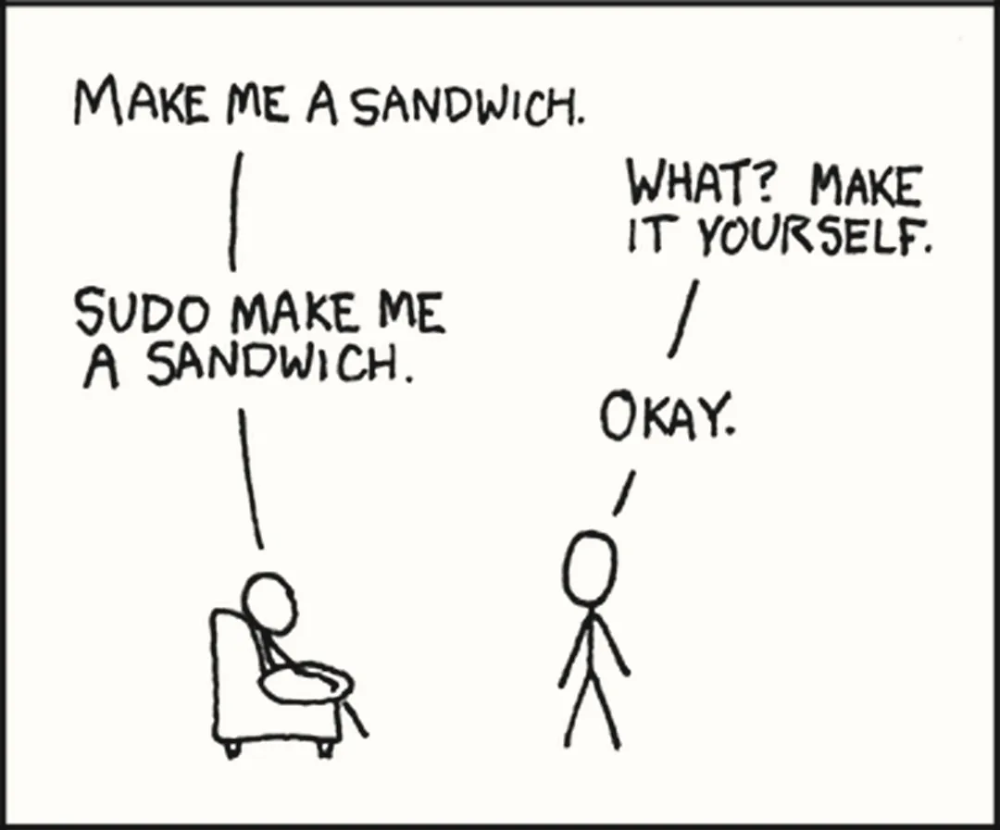
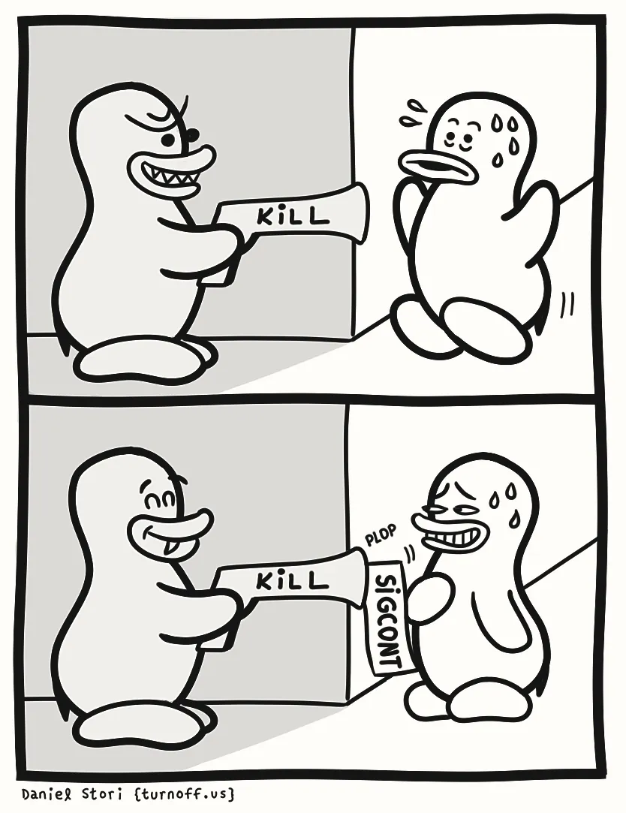
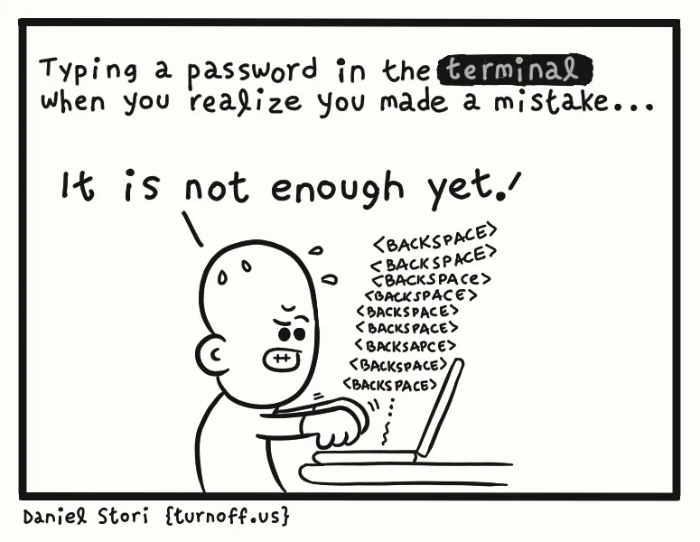

Bài 03 kết thúc ở một câu hỏi: Server thật chạy Linux, còn mọi lab tới giờ chạy trên Windows. Làm sao có một máy Linux thật ngay trên máy mình, để thấy process, signal và lỗi đúng như trên server? (xem lại đoạn cuối Bài 03).
Vì sao lại có câu hỏi này? Vì lab của Bài 03 chạy trên Windows, nên có mấy chỗ chỉ thấy được thứ gần giống, chưa thấy được đồ thật.
Làm xong lab Bài 03 trong Git Bash, đọc lại thì kết quả nào cũng kèm một chữ "nhưng".
Bấm Ctrl+C trên Windows thì không có signal nào được gửi đi. Windows chỉ báo một sự kiện cho cửa sổ dòng lệnh,
rồi Node tự dịch sự kiện đó thành SIGINT. Lệnh taskkill //F cũng chỉ gần giống SIGKILL. Còn lệnh mà
Bài 03 dặn dùng để tìm dấu vết của OOM killer thì không có luôn:
$ dmesg
bash: dmesg: command not foundCon số tự đo cũng mang dấu của Windows. Gọi một port không ai listen thì mất 2,155 giây mới nhận được
refused. Bài 01 lại nói trên Linux lời từ chối tới gần như ngay. Mà server thật thì chạy Linux.
Lý thuyết Bài 03 dạy về signal và OOM killer thì đúng, nhưng thứ bạn tận mắt thấy trong lab mới chỉ là bản gần giống. Bảng 1 gom những chỗ đó lại.
| Thứ cần quan sát | Trên Windows, trong Git Bash | Trên một server Linux |
|---|---|---|
| SIGINT khi bấm Ctrl+C | Sự kiện của cửa sổ dòng lệnh, Node tự dịch | Kernel gửi SIGINT tới process |
| SIGTERM, SIGKILL | Không có signal; taskkill //F kết thúc cưỡng bức | kill gửi SIGTERM, kill -9 gửi SIGKILL |
OOM killer, dmesg | Không có | Kernel ghi lại mỗi lần nó giết process |
refused ở port không ai listen | Khoảng 2 giây, vì Windows thử lại | Thường vài mili-giây, chưa đo trên máy này |
Dòng cuối của bảng là dòng dễ kiểm nhất, vì chỉ cần chạy lại đúng một lệnh trên một kernel khác. Hình 1 đặt hai lần đo cạnh nhau, cột phải còn để trống.
Windows · Git Bash Linux · bash
────────────────────────────────── ──────────────────────────────────
$ time curl -4 -o /dev/null \ $ time curl -4 -o /dev/null \
http://127.0.0.1:9999 http://127.0.0.1:9999
curl: (7) Failed to connect … curl: (7) Failed to connect …
after 2076 ms after ? ms
real 0m2.155s real ?Muốn điền cột phải thì cần những gì? Cần hai thứ, là một kernel Linux chạy trên máy bạn và một cách ra lệnh cho nó. Có hai thứ đó rồi thì không dừng ở một phép đo: bài này chạy luôn một app thật trên Linux, là app mẫu của khoá học, để thấy tận mắt hai dòng đầu của Bảng 1.
- Máy ảo là gì, và WSL2 đặt một kernel Linux thật vào máy mình bằng cách nào?
- Điều khiển máy Linux đó bằng gì: terminal, shell, lệnh, và cách đi lại giữa các thư mục?
- App mẫu chạy trên Linux ra sao, bị
killvàkill -9thì để lại gì, và nó còn thiếu gì để làm được việc?
Cần đã học trước
- Process, PID, process cha và con; những gì process sở hữu (file đang mở, thư mục làm việc, biến môi trường, user); user root. Bài 03, tab Process
- Kernel, user mode, syscall. Bài 03, tab Kernel
- Signal, handler, OOM killer,
dmesg. Bài 03, tab Process chết - Service là process có người trông coi. Bài 03, tab Service
- Lỗi tranh port khi hai process cùng xin listen một port. Bài 03, tab Lab
- Mã 500 do app viết. Bài 02, tab 502 và 500
refusedvà con số 2,155 giây. Bài 01, tab Kết nối TCP · tab Lab- Nửa phía server của bản đồ: firewall của server, Nginx, ứng dụng, database. Bài 00, tab Phía server
Vì sao không cài Linux lên Windows như cài một phần mềm? Lý do nằm ở hai kết luận của Bài 03. Một là chỉ kernel được chạm phần cứng. Hai là chương trình phải xin kernel làm hộ, qua syscall.
Vì sao phải là chính kernel Linux
Mọi dòng ở cột phải của Bảng 1 đều là việc của kernel Linux. Signal do kernel gửi, OOM killer là một phần của
kernel, còn lệnh dmesg thì đọc thông báo do kernel tự ghi. Vì vậy không thể cài mấy thứ đó lên Windows
như cài thêm một chương trình. Còn một lý do nữa: chương trình biên dịch cho Linux, như bash hay PostgreSQL, nói chuyện
với kernel bằng bộ syscall của Linux, mà kernel của Windows không hiểu bộ syscall đó.
Lúc học tới đây mình bị hỏi cần gì để thấy được OOM killer, và mình trả lời là cần có Linux trên máy. Câu đó thiếu mất một chữ, vì thứ cần là kernel Linux. Git Bash cho thấy rõ chỗ này. Các lệnh trong đó là lệnh Linux được biên dịch lại để chạy trên Windows, nên bên dưới vẫn là kernel Windows. Mình gọi nó là hàng đè tem, chứ không phải Linux thật.
Vậy là cần một kernel Linux. Nhưng Bài 03 còn nói chỉ một kernel được nắm phần cứng, và trên máy bạn đó là kernel Windows, thế thì đặt kernel thứ hai vào đâu? Người ta đã thử ba cách:
- Biên dịch lại từng chương trình Linux cho Windows. Git Bash ra đời như vậy.
- Dịch từng syscall của Linux sang lời gọi của Windows. Đó là WSL thế hệ đầu.
- Chạy hẳn một kernel Linux trong một máy ảo.
Phụ lục Lịch sử WSL kể vì sao hai cách đầu không đủ. Cách thứ ba là cách của WSL2, nên phần dưới đi vào nó.
Máy ảo và hypervisor
- Máy ảo virtual machine · VM
- Một máy tính dựng bằng phần mềm, nằm trên một máy thật. Nó có CPU, RAM, ổ đĩa, card mạng ảo, và chạy một hệ điều hành đầy đủ có kernel riêng. Kernel đó gọi là kernel khách.
- Hypervisor
- Lớp phần mềm nằm dưới mọi kernel, chia phần cứng thật cho các máy ảo và giữ chúng cô lập. Hypervisor của Windows tên là Hyper-V.
Hypervisor làm được việc đó nhờ đâu? Nhờ một tính năng của CPU tên là ảo hoá phần cứng (Intel gọi là VT-x, AMD gọi là AMD-V). Khi tính năng này bật, CPU có thêm một mức đặc quyền, cao hơn cả kernel mode của Bài 03, và hypervisor chạy ở mức đó. Kernel khách vẫn chạy ở kernel mode, nhưng chỉ trong phần tài nguyên nó được chia. Mỗi khi nó chạm ra ngoài phần đó, ví dụ tới một thiết bị thật, CPU dừng nó lại và trao quyền cho hypervisor quyết định.
Nhờ vậy hai kernel chạy cùng lúc được trên một máy. Mỗi kernel độc quyền phần của mình, còn hypervisor độc quyền việc chia. Khi Hyper-V bật thì chính Windows cũng chạy bên trên hypervisor, nằm cạnh các máy ảo.
Bạn đã gặp máy ảo ở đâu chưa? Rồi, chỉ là chưa gọi tên. Chiếc VPS ở Bài 03 thường là một máy ảo cắt ra từ một server lớn. Trên máy cá nhân thì VirtualBox hay VMware cho bạn tự dựng máy ảo. VirtualBox đặt hypervisor ở một chỗ khác với Hyper-V, và Ảnh 1 vẽ hai chỗ đó cạnh nhau.

Theo tài liệu của Microsoft, máy ảo truyền thống khởi động chậm, tốn tài nguyên và đòi bạn tự quản lý. WSL2 được thiết kế để bỏ đúng những điểm yếu này.
WSL2: một máy ảo nhẹ do Windows tự quản
WSL (Windows Subsystem for Linux) là thành phần của Windows cho phép cài một bản phân phối Linux và chạy chương trình Linux nguyên bản, không sửa đổi.
WSL 2 là thế hệ mặc định hiện nay. Theo tài liệu của Microsoft, nó "dùng công nghệ ảo hoá để chạy một kernel Linux bên trong một máy ảo tiện ích nhẹ". Windows tự khởi động và quản lý máy ảo này, bạn không phải cấu hình nó.
Kernel trong máy ảo đó có phải đồ thật không? Phải, nó là kernel Linux thật. Microsoft biên dịch nó từ mã nguồn trên kernel.org và cập nhật qua Windows Update, nên syscall của Linux được chính kernel Linux trả lời.
Thế hệ trước là WSL 1 thì không có kernel Linux. Nó đón từng syscall của Linux rồi dịch sang lời gọi của kernel Windows, nên syscall nào chưa được dịch thì chương trình cần tới nó không chạy được. Bảng 2 chép lại bảng so sánh hai thế hệ trong tài liệu của Microsoft.
| Feature | WSL 1 | WSL 2 |
|---|---|---|
| Integration between Windows and Linux | ||
| Fast boot times | ||
| Small resource foot print compared to traditional Virtual Machines | ||
| Runs with current versions of VMware and VirtualBox | ||
| Managed VM | ||
| Full Linux Kernel | ||
| Full system call compatibility | ||
| Performance across OS file systems | ||
| systemd support | ||
| IPv6 support |
Ba hàng in đậm là ba hàng bài này dựa vào.
- Hàng Full Linux Kernel là lý do bài này chọn WSL2. Những gì lab của Bài 03 chỉ thấy bản gần giống (Bảng 1) đều là việc của kernel Linux.
- Hàng Full system call compatibility nghĩa là chương trình Linux nào cũng chạy được, vì bên trả lời syscall là kernel Linux thật chứ không phải một lớp dịch.
- Hàng Performance across OS file systems là chỗ WSL 1 hơn: đọc file của Windows từ trong Linux thì WSL2 chậm hơn. Ngay dưới bảng, Microsoft khuyên đặt file dự án cùng phía với công cụ dùng nó.
Còn một hàng nữa dính tới bài. Hàng Managed VM ứng với câu cuối của định nghĩa ở trên, tức Windows tự khởi động và quản lý máy ảo.
Có kernel rồi thì dùng được chưa? Chưa, vì kernel không có chương trình nào để bạn gõ lệnh. Phần còn lại đến từ
một distro (Linux distribution, bản phân phối Linux). Distro là kernel Linux cộng một bộ
chương trình đi kèm, do một tổ chức đóng gói và duy trì. Bộ đó gồm ba thứ, là shell, các lệnh cơ bản như
ls, và trình quản lý gói để cài thêm phần mềm. Shell là chương trình nhận lệnh bạn gõ, tab sau
giải thích.
Ubuntu là distro mặc định của WSL và rất phổ biến trên server. Trong WSL2, mọi distro dùng chung kernel của Microsoft trong cùng một máy ảo, nhưng mỗi distro có hệ thống file riêng và tập process riêng.
Windows │ Máy ảo WSL2
│
Git Bash, PowerShell, │ distro Ubuntu
trình duyệt, IDE… │ bash, ls, nano, apt…
│ ───────────────────────────
kernel Windows │ kernel Linux (Microsoft biên dịch)
────────────────────────────────┴──────────────────────────────────
hypervisor (Hyper-V)
───────────────────────────────────────────────────────────────────
CPU · RAM · ổ đĩa · card mạngHình 2 kiểm được bằng hai lệnh. Lệnh đầu chạy trong PowerShell, còn lệnh sau chạy trong Ubuntu, và
uname -r in phiên bản của kernel đang chạy.
PS> wsl -l -v
NAME STATE VERSION
* Ubuntu Running 2
$ uname -r
6.6.87.2-microsoft-standard-WSL2microsoft-standard-WSL2 cho biết kernel do Microsoft biên dịch cho WSL2.Giới hạn của WSL2
WSL2 có ba giới hạn cần biết.
- CPU phải hỗ trợ ảo hoá, và ảo hoá phải được bật trong phần cài đặt khởi động của máy (BIOS hoặc UEFI). Thiếu
thì việc cài đặt dừng ở lỗi
0x80370102. - File lab nên đặt trong thư mục của Linux, theo hàng Performance across OS file systems của Bảng 2.
- WSL2 là phòng lab, không phải server. Theo tài liệu của Microsoft, khi bạn đóng hết cửa sổ Ubuntu thì máy ảo có thể bị tắt, kể cả lúc còn chương trình chạy nền trong đó.
Trên bản đồ của Bài 00, WSL2 là chỗ dựng lại nửa phía server.
Có máy ảo WSL2 rồi thì ra lệnh cho nó bằng gì? Nó giống server ở Bài 03, không có cửa sổ nào để bấm, nên cách duy nhất để ra lệnh là gõ chữ. Tab này chỉ dạy những lệnh mà bài sẽ gõ tới, và lệnh nào cũng được giải nghĩa ngay ở chỗ nó xuất hiện.
Terminal và shell
Bạn gõ chữ vào đâu, và ai đọc chữ đó? Có hai chương trình chia nhau việc này.
- Terminal
- Chương trình chỉ làm hai việc: hiện chữ lên màn hình và chuyển phím bạn gõ tới chương trình chạy bên trong nó. Terminal không hiểu lệnh. Windows Terminal hay cửa sổ của Git Bash đều là terminal.
- Shell
- Chương trình đọc một dòng lệnh, nhờ kernel chạy chương trình tương ứng, đợi nó xong rồi hỏi dòng tiếp. Shell là một process chạy bên trong terminal.
- bash Bourne Again SHell
- Shell mặc định trên Ubuntu và trên hầu hết server Linux. Git Bash là bash đưa sang Windows.
Vì terminal chỉ chuyển chữ còn shell mới hiểu chữ, cùng một cửa sổ Windows Terminal mở được cả cmd.exe, PowerShell lẫn bash, và mỗi shell hiểu dòng lệnh theo cách riêng của nó. Mọi lệnh từ đây trở đi đều viết cho bash.
Phụ lục Terminal và shell đi chậm hơn phần này: vì sao lại là hai chương trình,
bash làm gì với một dòng lệnh từ lúc bạn bấm Enter, nó tìm chương trình ở đâu, và vì sao cd là một lệnh
nằm sẵn trong bash. Bỏ qua phụ lục thì vẫn làm được hết lab của bài.
Một dòng lệnh gồm những gì
Mở Ubuntu ra thì thấy gì đầu tiên? Bash in ra một dấu nhắc (prompt) rồi chờ bạn gõ. Trên
Ubuntu dấu nhắc có dạng ten@may:~$. Đọc từ trái sang thì đó là tên user, tên máy, thư mục đang đứng, rồi
dấu $ cho user thường (với root thì là #).
Dòng bạn gõ sau dấu nhắc được bash cắt thành các chữ theo dấu cách. Chữ đầu tiên là tên lệnh, tức
tên chương trình cần chạy, còn các chữ sau là tham số (argument) đưa cho chương trình đó.
Theo quy ước, tham số nào bắt đầu bằng - thì là một tuỳ chọn (option). Ví dụ
trong ls -l /etc thì ls là tên lệnh, -l là tuỳ chọn và /etc là
tham số.
Bash có hiểu -l nghĩa là gì không? Không. Nó chuyển nguyên chữ đó cho chương trình, và chương trình
tự đọc. Giống như khi chạy java -jar app.jar --server.port=9090, chữ --server.port=9090
rơi vào mảng String[] args của hàm main.
Exit status: con số một lệnh để lại
Lệnh chạy xong thì bash biết nó thành hay bại bằng cách nào? Bằng một con số gọi là exit status.
Đó là số nguyên mà process để lại khi thoát, 0 là thành công còn khác 0 là thất bại. Trong
Java, đó là con số truyền vào System.exit(). Bash cất con số của lệnh vừa chạy vào biến
$?, nên gõ echo $? ngay sau một lệnh là đọc được nó.
$ ls /etc/hostname
/etc/hostname
$ echo $?
0
$ ls /khong-co
ls: cannot access '/khong-co': No such file or directory
$ echo $?
2Con số này đáng học vì tab sau dùng chính nó để biết app chết vì signal nào.
Đường dẫn trên Linux
Đường dẫn trên Linux khác Windows ở đâu? Linux không chia ổ C:, D: như Windows. Nó có
một cây thư mục duy nhất, bắt đầu từ thư mục gốc /, và trong WSL thì ổ C: của Windows hiện
ra ở /mnt/c. Còn hai chỗ khác nữa. Linux ngăn các phần của đường dẫn bằng / chứ không
phải \, và Linux phân biệt hoa thường, nên /etc và /Etc là hai đường dẫn khác
nhau.
Đường dẫn bắt đầu bằng / thì tính từ gốc cây, nên đứng ở đâu nó cũng trỏ về một chỗ. Đường dẫn không
bắt đầu bằng / thì tính từ thư mục bạn đang đứng, trong đó .. là thư mục cha. Mỗi user có
một thư mục riêng gọi là thư mục nhà, trên Ubuntu là /home/<tên-user>, viết tắt là
~.
Bảng 3 gom những lệnh bài này gõ tới.
| Lệnh | Làm gì | Thường gõ |
|---|---|---|
pwd | In thư mục đang đứng | pwd |
ls | Liệt kê thư mục | ls -l chi tiết, ls -a cả file ẩn |
cd | Đổi thư mục đang đứng | cd .., cd ~ |
mkdir | Tạo thư mục | mkdir -p a/b |
cat | In nội dung file | cat /etc/hostname |
nano | Sửa file trong terminal | Ctrl+O lưu, Ctrl+X thoát |
ps | Liệt kê process đang chạy | ps -ef mọi process, kèm PID |
kill | Gửi signal tới một process | kill <PID>, kill -9 <PID> |
echo | In các tham số | echo $? |
sudo và apt: quyền root và cài phần mềm
Bài 03 kết luận kernel cho phép hay từ chối là dựa trên user của process. User bạn tạo lúc cài Ubuntu là user
thường, nên nó bị chặn ở những chỗ chỉ root được vào. Ví dụ là /root, thư mục nhà của root (nó không
liên quan tới thư mục gốc /, chỉ trùng chữ):
$ ls /root
ls: cannot open directory '/root': Permission deniedCần quyền root cho một lệnh thì làm sao? Dùng sudo (superuser do). Nó làm ba việc, là
kiểm tra bạn có được phép không, hỏi mật khẩu của chính bạn, rồi sinh một process con chạy lệnh bằng user root, ví
dụ sudo ls /root. Theo tài liệu của Microsoft, user tạo lúc cài WSL dùng được sudo. Lúc
bạn gõ mật khẩu, màn hình không hiện gì cả.
Giới hạn của sudo thì Bài 03 đã nêu: process chạy bằng root mà có lỗi thì lỗi đó có quyền với cả máy. Vì vậy chỉ
thêm sudo vào đúng lệnh cần nó. Truyện tranh ở Ảnh 2 kể lại đúng cơ chế này.

sudo đứng trước thì được làm. Lệnh không đổi, chỉ user chạy nó đổi thành root. Truyện
bỏ qua một bước của sudo thật: kiểm tra bạn có được phép không và hỏi mật khẩu trước khi làm.Việc cần sudo nhiều nhất trong bài này là cài phần mềm. Lệnh dmesg ở tình huống mở bài báo
command not found, nghĩa là máy không có chương trình nào tên như vậy. Trên Ubuntu, thiếu chương trình
thì cài bằng apt, trình quản lý gói: nó tải phần mềm đã đóng gói sẵn từ kho của Ubuntu về rồi đặt
vào đúng chỗ. Cài phần mềm là ghi vào thư mục của hệ thống, nên lệnh có dạng
sudo apt install <tên-gói>.
Có kernel Linux và có shell rồi thì chạy gì trên đó? Chạy một app thật, loại app bạn vẫn viết hằng ngày. Tab này chạy nó trên Linux, giết nó bằng hai cách để thấy điều Bài 03 mới kể bằng lời, rồi chỉ ra nó còn thiếu gì.
App mẫu là gì
App mẫu là một API Spring Boot nhỏ để ghi chú, nằm trong thư mục
lab/app-mau của
repo. Nó chỉ có một file Java, và nó lưu dữ liệu vào PostgreSQL, loại database đã có mặt trên bản đồ của Bài 00. Bảng 4
kể ba đường dẫn của nó.
| Request | Làm gì | Cần database |
|---|---|---|
GET / | Trả tên app và PID của nó | |
GET /ghi-chu | Đọc mọi ghi chú | |
POST /ghi-chu | Thêm một ghi chú |
App được viết để tìm database ở localhost:5432, tức port mặc định của PostgreSQL trên chính máy đang
chạy app.
Chạy app trên Linux
Muốn chạy một app Java trên máy Linux mới tinh thì cần gì? Cần Java, và máy chưa có. Ubuntu vừa cài không kèm Java,
nên việc đầu tiên là cài nó bằng apt, cùng với Maven để đóng code thành file jar.
sudo apt update
sudo apt install openjdk-21-jdk-headless mavenLệnh apt update tải về danh sách gói mới nhất, còn apt install mới là lệnh cài. Có Java
rồi thì lấy code về, đóng thành file jar và chạy:
cd ~
git clone https://github.com/AnhTuan2111/devops-self-learning.git
cd devops-self-learning/lab/app-mau
mvn -q package
java -jar target/app-mau.jarLần đầu mvn package mất vài phút, vì Maven phải tải các thư viện của Spring Boot về. Chạy xong thì
cuối log có hai dòng như ở Hình 4.
… appmau.AppMau : Started AppMau in 2.426 seconds (process running for 2.993)
[app-mau] PID = 29264, dang listen port 8080Dòng thứ hai do chính app in ra, và nó nói hai điều đã học ở Bài 03: app là một process có PID, và process đó đang listen port 8080. Cửa sổ này từ giờ bị app chiếm, nên muốn gõ lệnh khác thì mở thêm một cửa sổ Ubuntu thứ hai.
App chạy, nhưng chưa làm được việc
App đã lên thì gọi thử được chưa? Ở cửa sổ thứ hai, gọi đường dẫn không cần database trước:
$ curl http://localhost:8080/
{"pid":29264,"app":"app-mau"}Đường này trả lời ngay. Còn đường đọc ghi chú thì sao?
$ curl -i http://localhost:8080/ghi-chu
HTTP/1.1 500
Content-Type: application/json
…
{"timestamp":"2026-10-12T18:18:48.615Z","status":500,"error":"Internal Server Error","path":"/ghi-chu"}Mã 500 này do ai viết ra? Theo Bài 02 thì 500 là mã của chính app: request đã vào tới code, và code gặp một chuyện nó không xử lý được. Chuyện đó là gì thì log của app ở cửa sổ thứ nhất nói rõ:
Caused by: org.postgresql.util.PSQLException: Connection to localhost:5432 refused.
Check that the hostname and port are correct and that the postmaster is accepting TCP/IP connections.Chữ refused ở đây chính là refused của Bài 01. App mở kết nối tới localhost:5432, máy còn
sống nên trả lời ngay, và câu trả lời là "không", vì không có chương trình nào đang listen port 5432. Nói thẳng ra thì
máy này chưa có PostgreSQL. App vẫn sống và vẫn listen 8080, nhưng việc chính của nó là ghi chú thì chưa làm
được.
Giết app bằng hai cách
Bài 03 nói SIGTERM thì app được báo trước còn SIGKILL thì không, nhưng lab trên Windows chỉ cho thấy bản gần giống.
Giờ có kernel Linux thật thì thử được. Trước hết phải biết PID của app, và ở cửa sổ thứ hai có thể tìm nó bằng
ps:
$ ps -ef | grep java
ten 1432 812 3 10:02 pts/0 00:00:07 java -jar target/app-mau.jarLệnh ps -ef in mọi process của máy, mỗi process một dòng. Dấu | đưa những dòng đó sang cho
grep java, và grep chỉ giữ lại dòng nào có chữ java. Cột thứ hai của dòng còn lại là PID.
Output trên là dạng kỳ vọng, nên các con số trên máy bạn sẽ khác.
Có PID rồi thì gửi signal. Lệnh kill không ghi số thì gửi SIGTERM, signal số 15:
# Cửa sổ 2
kill 1432
# Cửa sổ 1, nơi app đang chạy
[app-mau] duoc bao truoc, dang don dep roi thoat
$ echo $?
143App kịp in một dòng trước khi thoát, vì SIGTERM là signal bắt được: Spring Boot nhận nó, chạy các đoạn dọn dẹp đã đăng ký rồi mới thoát. Giờ chạy lại app, tìm PID mới, và lần này gửi SIGKILL, signal số 9:
# Cửa sổ 2
kill -9 1507
# Cửa sổ 1
Killed
$ echo $?
137Lần này app không in được dòng nào. Chữ Killed là do bash in ra, sau khi kernel báo cho nó biết process
con vừa bị giết. Cả hai output trên là dạng kỳ vọng theo tài liệu của bash.
Hai con số 143 và 137 từ đâu ra? Theo tài liệu của bash, khi một lệnh chết vì signal số N thì exit status của nó là 128 cộng N. SIGTERM là số 15 nên ra 143, còn SIGKILL là số 9 nên ra 137. Vì vậy chỉ cần nhìn exit status là biết một process đã tự thoát hay bị giết, và bị giết bằng signal nào.
| Lệnh | Signal | App kịp làm gì | Exit status |
|---|---|---|---|
kill <PID> | SIGTERM, số 15 | In dòng dọn dẹp rồi thoát | 143 |
kill -9 <PID> | SIGKILL, số 9 | Không kịp làm gì | 137 |
Lệnh tên là kill nhưng việc nó làm là gửi signal, và signal nào thì do bạn chọn. Truyện ở Ảnh 3 đùa
đúng chỗ đó.

kill không ghi gì thì gửi SIGTERM, kill -9 gửi SIGKILL, còn kill -CONT gửi đúng lá cờ trong truyện.Sau cả hai lần giết, app nằm im. Không có ai dựng nó dậy, vì nó mới là một process chứ chưa phải một service theo nghĩa của Bài 03: chưa có người trông coi nào đứng sau nó. Muốn nó chạy lại thì bạn phải tự gõ lệnh.
Chạy hai bản cùng lúc
Nếu quên là app đang chạy mà gõ lệnh chạy thêm lần nữa thì sao? Bản thứ hai chết ngay lúc khởi động, với thông báo ở Hình 7.
***************************
APPLICATION FAILED TO START
***************************
Description:
Web server failed to start. Port 8080 was already in use.
Action:
Identify and stop the process that's listening on port 8080 or configure this application to listen on another port.Đây là lỗi tranh port đã gặp ở lab của Bài 03, lần này do Spring Boot kể lại bằng lời. Kernel giữ bảng các port đang
listen, port 8080 đã thuộc về bản thứ nhất, nên bản thứ hai xin listen thì bị kernel từ chối. Dòng Action
cũng chỉ đúng việc cần làm: tìm process đang giữ port rồi dừng nó, và bạn vừa biết cách tìm bằng
ps -ef | grep java.
Chỗ kẹt: app cần PostgreSQL
Vậy muốn app ghi được ghi chú thì phải làm gì? Phải có PostgreSQL chạy trên máy này và listen port 5432. Cài nó
bằng tay thì gồm những việc sau: cài gói PostgreSQL bằng apt, tạo một user database, đặt mật khẩu, tạo
một database, rồi kiểm xem nó có nhận kết nối không. Bạn vừa mất chừng đó công cho Java, giờ lại thêm một lượt cho
database.
Chưa hết. Mọi thứ vừa cài chỉ nằm trên máy này. Sang máy khác thì làm lại từ đầu, và hai máy cài ở hai thời điểm sẽ nhận hai phiên bản khác nhau, nên app chạy được ở máy này chưa chắc chạy được ở máy kia. Bài này dừng ở đây và không cài PostgreSQL bằng tay.
Trên Linux, kill để lại 143 và app kịp dọn dẹp, còn kill -9 để lại 137 và app không kịp
làm gì. App mẫu đã chạy, nhưng nó cần PostgreSQL mà máy chưa có.
Chuẩn bị
Lab đi theo thứ tự của ba tab trước, rồi kết thúc bằng phép đo của Hình 1. Chỗ nào ghi output "kỳ vọng" thì đó
là dạng theo tài liệu, còn output thật của bạn thì dán vào notes.md.
Bạn cần hai thứ, là Windows 11 hoặc Windows 10 bản 2004 trở lên, và quyền quản trị. Từ Lab 2 trở đi, mọi lệnh chạy trong Ubuntu.
Lab 1: Cài Ubuntu trên WSL2, tìm bằng chứng của kernel Linux
Mở PowerShell bằng "Run as administrator":
wsl --install -d Ubuntu
wsl -l -vVì sao phải ghi -d Ubuntu? Theo tài liệu của Microsoft, wsl --install không kèm gì thì
chỉ cài trên máy chưa từng có WSL. Máy đã có WSL thì lệnh đó chỉ in trang hướng dẫn. Cài xong máy có thể đòi khởi
động lại, và lần đầu mở Ubuntu thì nó hỏi tên user và mật khẩu cho user Linux mới.
Lệnh wsl -l -v phải cho dòng Ubuntu với cột VERSION là 2. Nếu là 1 thì chạy
wsl --set-version Ubuntu 2. Xong thì vào Ubuntu và gõ:
uname -r
sudo dmesg | tail -5Lệnh đầu cho bằng chứng thứ hai của Hình 3. Lệnh sau là việc Git Bash không làm được ở tình huống mở bài, tức đọc
thông báo của kernel, và nó cần sudo vì trên nhiều bản Ubuntu chỉ root được đọc. Phần
| tail -5 chỉ giữ lại năm dòng cuối cho khỏi trôi màn hình. Con số trong ngoặc vuông ở đầu mỗi dòng là
số giây tính từ lúc kernel khởi động.
Lệnh sudo đầu tiên hỏi mật khẩu, và như mục sudo đã nói, màn hình không hiện gì khi bạn gõ. Gõ nhầm thì xoá thật nhiều rồi gõ lại từ đầu, như Ảnh 4.

Lab 2: Đi lại, đọc và sửa file
pwd
mkdir -p ~/lab04
cd ~/lab04
nano ghi-chu.txt # gõ hai dòng, Ctrl+O, Enter, Ctrl+X
cat ghi-chu.txt
ls -laLệnh pwd đầu tiên in ra /home/<tên-user>. Thư mục ~/lab04 nằm trong hệ
thống file của Linux, đúng lời khuyên ở phần giới hạn của WSL2. Lệnh cat phải in lại đúng hai dòng bạn đã
gõ.
Tự gây lỗi. Ba lệnh sau, mỗi lệnh hỏng một kiểu, và sau mỗi lệnh gõ thêm echo $? để
xem exit status:
cd /Etc
ls /root
sudo ls /rootcd /Etc cho No such file or directory vì Linux phân biệt hoa thường. ls /root
cho Permission denied vì bash chạy bằng user thường. Lệnh thứ ba hỏi mật khẩu rồi chạy ls
bằng root, và chỉ lệnh này để lại exit status 0.
Lab 3: Chạy app mẫu
Cài Java và Maven, lấy code về rồi chạy, đúng các lệnh ở tab App mẫu:
sudo apt update
sudo apt install openjdk-21-jdk-headless maven
cd ~
git clone https://github.com/AnhTuan2111/devops-self-learning.git
cd devops-self-learning/lab/app-mau
mvn -q package
java -jar target/app-mau.jarĐợi tới khi thấy dòng [app-mau] PID = … rồi mở cửa sổ Ubuntu thứ hai và gọi thử:
curl http://localhost:8080/
curl -i http://localhost:8080/ghi-chuKỳ vọng lệnh đầu trả về tên app và PID, lệnh sau trả 500. Quay lại cửa sổ thứ nhất, tìm trong log dòng có chữ
refused và chép nó vào notes.md. Trước khi đọc tiếp, thử tự trả lời: dòng đó nói app đã gọi
tới đâu, và vì sao bị từ chối?
Lab 4: Giết app bằng hai cách
Đây là Lab 4 và Lab 5 của Bài 03, lần này không còn chữ "tương đương". App đang chạy ở cửa sổ 1.
# Cửa sổ 2
ps -ef | grep java # cột thứ hai là PID
kill <PID> # không ghi số: gửi SIGTERM
# Cửa sổ 1, sau khi app thoát
echo $?Ghi lại dòng cuối app in ra và con số của echo $?. Rồi chạy lại app ở cửa sổ 1, tìm PID mới, và lần
này gõ kill -9 <PID>. Ghi lại hai thứ đó lần nữa và so với Bảng 5.
Còn một cách dừng thứ ba là bấm Ctrl+C ở cửa sổ 1. Theo Bài 03 thì Ctrl+C gửi SIGINT, signal số 2. Thử đoán exit
status trước khi bấm, rồi kiểm lại bằng echo $?.
Lab 5: Tự gây lỗi, chạy hai bản cùng lúc
Để app chạy ở cửa sổ 1. Sang cửa sổ 2, vào đúng thư mục lab/app-mau rồi chạy thêm một bản:
cd ~/devops-self-learning/lab/app-mau
java -jar target/app-mau.jar
echo $?Bản thứ hai phải chết với thông báo ở Hình 7, và exit status của nó khác 0. Giờ tự sửa: tìm process đang giữ port
8080 bằng ps -ef | grep java, kill nó, rồi chạy lại bản thứ hai. Lần này nó phải lên được.
Exit status của bản bị kill và của bản chết vì tranh port khác nhau ở đâu, và vì sao?
Bản bị kill để lại 143, vì nó chết do một signal. Bản tranh port thì tự thoát sau khi báo lỗi, nên nó
để lại một con số nhỏ khác 0 chứ không phải 128 cộng số signal.
Lab 6: Phép đo đối chứng
Đây là cột phải của Hình 1. Viết dự đoán vào notes.md trước, rồi gõ trong Ubuntu:
time curl -4 -o /dev/null http://127.0.0.1:9999Dạng kỳ vọng, chưa phải output thật:
curl: (7) Failed to connect to 127.0.0.1 port 9999 after 0 ms: Couldn't connect to server
real 0m0.0…sCâu chữ sau dấu hai chấm thì mỗi bản curl viết một khác, nên con số mới là thứ cần so. Địa chỉ
127.0.0.1 ở đây là loopback của chính máy ảo.
Ghi con số của bạn cạnh con số 2,155 giây. Lệnh, máy và port đều như nhau, nên chỗ chênh là chênh giữa hai kernel.
Bảng tra triệu chứng
Theo lối của Bài 02: biết ai viết ra thông báo là khoanh được vùng cần nghi.
| Thấy gì | Ai viết | Lý do | Sửa |
|---|---|---|---|
command not found | bash | Máy chưa có chương trình tên đó, hoặc gõ sai tên | Kiểm tên; sudo apt install |
No such file or directory | Chương trình, theo lỗi kernel trả | Sai đường dẫn, sai hoa thường, hoặc đang đứng ở một thư mục khác | pwd; thử đường dẫn bắt đầu bằng / |
Permission denied | Chương trình, theo lỗi kernel trả | User của process không có quyền với file | sudo cho đúng lệnh cần root |
Port 8080 was already in use | Spring Boot, theo lỗi kernel trả | Đã có process khác listen port đó | ps -ef | grep java, rồi kill |
500 kèm Connection to localhost:5432 refused trong log | App mẫu | Không có chương trình nào listen port 5432: máy chưa có PostgreSQL | Chưa sửa trong bài này |
Killed, exit status 137 | bash | Process con bị SIGKILL | Tìm xem ai đã gửi kill -9 |
The system cannot accept the time entered | cmd.exe | Lệnh bash gõ vào cmd.exe | Chạy trong Ubuntu hoặc Git Bash |
0x80370102 khi cài | Windows | Ảo hoá chưa bật trong BIOS/UEFI | Bật ảo hoá theo hướng dẫn của hãng máy |
| Kẹt trong một màn hình | nano | Chương trình đang chiếm terminal, chờ phím của nó | Ctrl+X với nano, Ctrl+C với lệnh đang chạy |
Tự kiểm tra
Bấm vào dòng nào bạn tự giải thích được.
- Giải thích được WSL2 là một máy ảo có kernel Linux riêng, và vì sao cần hypervisor
- Phân biệt được terminal, shell và bash
- Tới một thư mục, xem và sửa một file bằng
nanomà không cần chuột - Chạy được app mẫu trên Linux và tìm được PID của nó
- Đọc được 143 và 137 nói app chết vì signal nào
- Đọc được lỗi
Port 8080 was already in usevà tự sửa được - Nói được app mẫu đang thiếu gì, và vì sao cài tay thứ đó là một chỗ kẹt
Những chỗ hay hiểu sai
| Dễ nghĩ là | Thực tế | Xem lại |
|---|---|---|
| WSL2 là trình giả lập Linux | WSL2 chạy kernel Linux thật trong máy ảo. Dịch syscall là cách của WSL 1 | WSL2 |
| Terminal và shell là một | Terminal chuyển chữ, shell hiểu chữ. Một terminal chạy được nhiều shell | Terminal và shell |
Lệnh kill là giết ngay | Nó gửi một signal. Không ghi số thì là SIGTERM, và app được dọn dẹp rồi mới thoát | Giết app bằng hai cách |
| App khởi động xong là app dùng được | App mẫu lên và listen 8080, nhưng đường dẫn cần database vẫn trả 500 vì chưa có PostgreSQL | App chạy, nhưng chưa làm được việc |
Kết lại
Câu hỏi của bài là làm sao có một máy Linux thật ngay trên máy mình, để thấy process, signal và lỗi đúng như trên server. Câu trả lời đi qua ba bước. Bước thứ nhất, WSL2 chạy một kernel Linux thật trong một máy ảo nhẹ, và Ubuntu đặt lên đó một bộ chương trình.
Bước thứ hai, bash với vài lệnh là đủ để điều khiển máy đó, tức đi lại, đọc và sửa file, cài phần mềm, tìm và dừng một process.
Bước thứ ba, app mẫu chạy được trên máy đó, và signal giờ là signal thật: kill để lại 143 và app kịp
dọn dẹp, còn kill -9 để lại 137 và app không kịp làm gì. Nhưng app chưa làm được việc của nó, vì nó cần
PostgreSQL mà máy chưa có.
Để chạy được app, bạn đã phải cài Java bằng tay. Giờ app lại đòi PostgreSQL, tức thêm một lượt cài, tạo user, đặt mật khẩu, tạo database, và sang máy khác thì làm lại tất cả. Từ đó còn lại một câu hỏi:
App mẫu cần PostgreSQL, mà cài tay thì lâu và mỗi máy mỗi khác. Có cách nào chạy PostgreSQL mà không phải cài nó không?
Phụ lục Lịch sử WSL: vì sao Windows chạy được Linux, từ máy ảo đầy đủ, qua Cygwin và MSYS2 (gốc của Git Bash), tới WSL 1 dịch syscall và WSL2 với kernel thật.
Phụ lục Terminal và shell: bảy bước bash làm với một dòng lệnh, PATH, và vì sao
cd nằm sẵn trong bash.
Nguồn đọc thêm
- Microsoft Learn, Install WSL. learn.microsoft.com/…/install
- Microsoft Learn, Comparing WSL Versions. learn.microsoft.com
- Microsoft Learn, Hyper-V architecture (câu "Hyper-V features a Type 1 hypervisor-based architecture"). learn.microsoft.com
- Oracle VirtualBox, User Guide, mục Features (VirtualBox là "hosted hypervisor", còn gọi "type 2"). virtualbox.org/manual
- Microsoft Learn, Basic commands for WSL. learn.microsoft.com
- Microsoft Learn, Set up a WSL development environment. learn.microsoft.com
- Microsoft Learn, Troubleshooting Windows Subsystem for Linux. learn.microsoft.com
- GNU, Bash Reference Manual, mục Exit Status: lệnh chết vì signal số N thì exit status là 128 cộng N. gnu.org/software/bash/manual
- man7.org, signal(7): số hiệu của từng signal.
- Spring Boot, Graceful Shutdown: app xử lý nốt request đang dở khi nhận SIGTERM. docs.spring.io
Nguồn ảnh
Sơ đồ lấy từ Wikimedia Commons, theo giấy phép ghi ở dòng của nó, đã chuyển sang đen trắng. Truyện tranh của xkcd và của turnoff.us dùng theo giấy phép phi thương mại ghi ở từng dòng, đã đổi cỡ và chuyển sang đen trắng.
- Ảnh 1Hai kiểu hypervisor, Scsami, Wikimedia Commons, CC0.
- Ảnh 2Sandwich, Randall Munroe, xkcd.com, CC BY-NC 2.5.
- Ảnh 3Signals, Daniel Stori, turnoff.us, CC BY-NC-SA 4.0.
- Ảnh 4Terminal password typing, Daniel Stori, turnoff.us, CC BY-NC-SA 4.0.